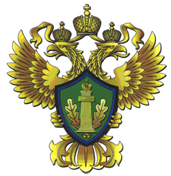

The Tunguska site was not of tremendous interest to the Russian government until the 1908 event. After that, in 1921, a group of researchers was displaced to the region to investigate what had happened (Phillips, 2008). Research in the area was difficult due to the location of the Tunguska site, in central Siberia. It was not until the ‘Zapovednik’ profiling of protected areas by the Russian Federation Ministry of Natural Resources that the Tunguska site was brought forward as a candidate for being classified as a ‘Zapovednik’ (Russian Ministry of Natural Resources, 2011). A ‘Zapovednik’ is a Russian protected area designation which means to keep a place ‘forever wild’ this is similar to the IUCN 1b Wilderness Area classification (Russian Ministry of Natural Resources, 2019). The funding for the ‘Zapovednik’ comes from the Russian Federal Government as a part of the Ministry of Natural Resources budget (Russian Ministry of Natural Resources, 2019).
The site cannot be visited by anyone who does not have authorization from the Ministry of Natural Resources. Most of the people admitted into the preserve are there for scientific studies. Corelating to that the management of the reserve is very non-invasive. In-order to properly study the region it cannot be altered by human infrastructure (Russian Ministry of Natural Resources, 2011).

Photo Credit to Russian Federation
{kind=link}